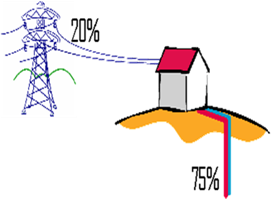

La calefacción geotérmica, destaca por su calidad, confort, rendimiento. El confort también es sinónimo de libertad. Ya no tendrá que preocuparse de tener que llenar depósitos de combustible, deshollinar la chimenea cada cierto tiempo, mantenimiento de quemadores, filtros... Su manejo es sencillo, no precisa de cuidados específicos y no contamina, su combustible es natural y renovable de por vida.

Todo este confort lo puede disfrutar con un mayor ahorro respecto a las instalaciones de calefacción de energías tradicionales; por cada 1Kw de electricidad consumido por el compresor obtenemos entre 3 y 4Kw de energía, según las configuraciones. De este modo, el ahorro realizado en la factura de electricidad puede alcanzar hasta un 75% con respecto a la calefacción eléctrica, a esto hay que añadir también los ahorros de los mantenimientos habituales. Con el añadido de ausencia de olores, posibles derrames, llamas... (calderas de gasóleo).